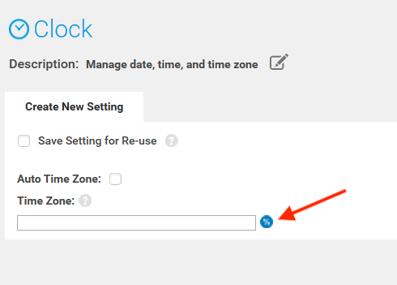
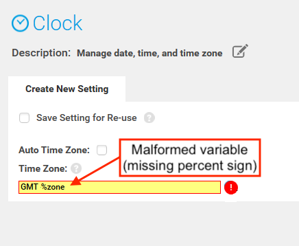
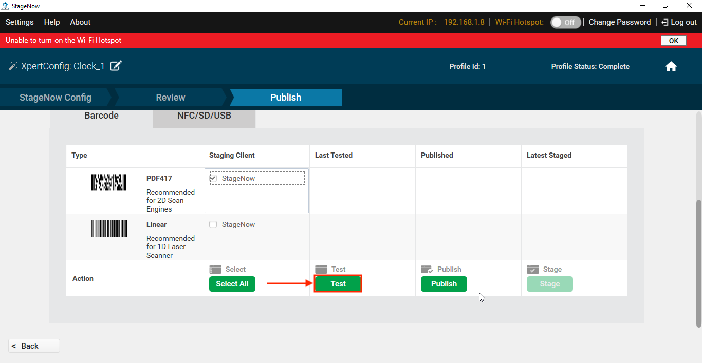
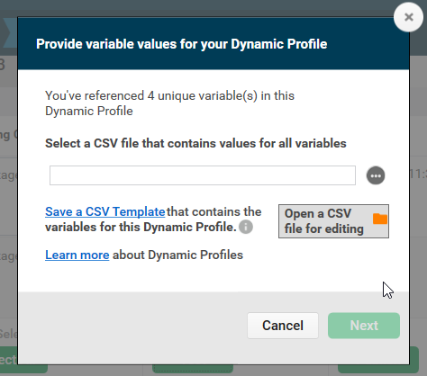
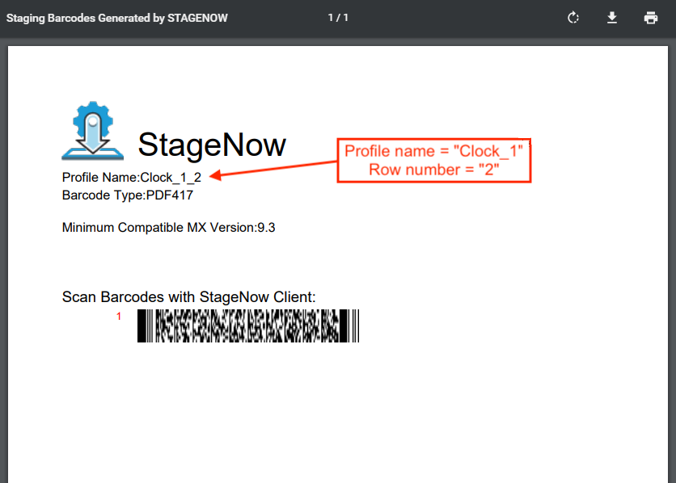

Variable Creation
Dynamic Staging variables are created in two primary ways:
Exporting Variables from a Database - Companies that maintain user data (locale, network settings, etc.) in databases or spreadsheets can export the relevant data to a
.csvfile and use the file to generate staging Profiles accordingly. When a StageNow Profile is created for pre-existing variables, the variable names entered in the Profile must exactly match those of the database.Generating Variables "On the Fly" - For companies that DO NOT maintain user databases (or that do not wish to use them for this purpose), variable names can be made up as the Dynamic Profile is being created. Once the Profile is finished, StageNow can generate a
.csvtemplate file that contains all the newly created variables that the administrator can then populate with the required data. This is the Zebra-recommended method of creating a.csvfile because of the inherent accuracy of automatic output of variable names.
Both of these scenarios are fully supported by StageNow and documented in the Using Dynamic Staging section.
There are many possible ways that Dynamic Staging could help save time. For example, a company that configures devices at a central location and deploys them to branch locations throughout the United States might maintain one .csv file for each store, each of which might contain device data for that store's departments and the requisite device settings. To illustrate, if "Store 1" had 10 departments, the Store_1.csv file would contain 11 rows. The first row must contain the variable names. The next 10 rows are for the departments, and each contains the settings for that department's variables. Variable names common to all departments might include:
%dept_name%%ssid%%wifi_passphrase%%default_scanner%%app_1%%app_2%%app_3%
Using Dynamic Staging
Variable Usage Rules
- To avoid possible errors, the
.csvfile must NOT be open when Dynamic Staging is performed. - Variable names used in a StageNow Profile must match exactly with those in the
.csvfile. - Variables can be used alone or in combination with static values and/or other variables in the same field.
- Each row in the
.csvfile represents one set of data for a Dynamic Profile. - Row numbers within the
.csvfile are used to label barcode printouts for identification purposes. - Dynamic Staging supports plain text files only for input.
- Each variable MUST be separated by a semi-colon (;) and each line must end with a semi-colon.
- Dynamic Variables are supported ONLY for device settings and Staging Operator instruction fields.
- The Staging Operator instruction field accepts ONE variable only.
- If a percentage sign is to be part of the variable data, the percentage sign must first be declared as a variable. See example below.
Using '%' as variable data
StageNow accepts all characters (including the semi-colon) as entries in Dynamic Variable fields except the percent sign (%), which requires special handling to avoid a "Malformed variable" error. To use a percent sign as data in an entry field (for example in an SSID name like Store_01_SS%ID), the percent sign must first be declared as a variable.
To include a percent sign (%) in a data entry field:
- In the
.csvfile to be used, add a variable named "%percent%" with "%;" as its only value. - In the SSID field in StageNow, enter "Store_01_SS%percent%ID" as the value (for example).
- Generate the barcode(s) as desired. When the barcode is generated, StageNow will replace "%percent%" with the "%" character, as in the "Store_01_SS%ID" name above.
To Use Dynamic Staging:
Before beginning, enable Dynamic Staging in the Global Settings panel:
 Click image to enlarge; ESC to exit.
Click image to enlarge; ESC to exit.
Next, open a Profile to which to add or enable dynamically staged fields and follow the steps below.
- Identify data-entry fields accompanied by a percent-sign icon:
 Click image to enlarge; ESC to exit.
- Enter static text (i.e. "GMT") and/or variables (i.e.
%zone%) in any combination as desired:
 Click image to enlarge; ESC to exit.
Click image to enlarge; ESC to exit.
A warning appears until variables are entered using the correct syntax:
 Click image to enlarge; ESC to exit.
- Enter remaining static text and/or variables as desired for all fields and click the "Continue" button:
 Click image to enlarge; ESC to exit.
Click image to enlarge; ESC to exit.
- To test a Dynamic Profile, select a barcode type and click the "Test" button:
 Click image to enlarge; ESC to exit.
- A prompt appears for selecting (or creating) the
.csvfile similar to the image below:
 To select an existing.csvfile skip to Step 6.
To create a.csvfile "on the fly" from variables created in the Profile:
a. Click "Save a CSV Template" in the dialog shown below, name and save the file as prompted.
b. In the same dialog (as below), click "Open a CSV file for editing, navigate to and open the file saved in Step a.
c. Enter data for all variables (separated by semi-colons), save and close the file.
IMPORTANT:Use semi-colons to separate variable names and data, and at the end of each line (see Notepad image, below).
 The image below shows a correctly formatted
The image below shows a correctly formatted .csvfile:
 Click image to enlarge; ESC to exit.
Click image to enlarge; ESC to exit.
- Select the
.csvfile that contains variable data for the Dynamic Profile:
 Click image to enlarge; ESC to exit.
Click image to enlarge; ESC to exit.
On success, a barcode sheet is produced for each row of the.csvfile similar to the image below.
The Profile name is appended with the row number on the printout for identification.
 Click image to enlarge; ESC to exit.
- If errors occur, refer to the Troubleshooting section below for instructions.
- When testing is completed, click Publish. A prompt appears for entering Staging Operator instructions.
Combine a variable and static text as desired. An example is shown below.
NOTE: This field accepts ONE variable only.
 Click image to enlarge; ESC to exit.
Click image to enlarge; ESC to exit.
- Click "Publish Now" to complete the process; distribute staging materials as normal.
Dynamic Staging is complete
Troubleshooting
Dynamic Staging errors occur when StageNow is unable to acquire data from a .csv file for generating staging media.
Typical causes:
- The
.csvfile is missing data for one or more variables - One or more variables were entered incorrectly in StageNow
- The
.csvfile is not present on the host workstation - The
.csvfile is open or otherwise locked on the host workstation
NOTE: The "Host the Deployment Package Outside of StageNow FTP Server" option is not available when using Dynamic Staging.
Error Diagnosis:
- If StageNow displays a "CSV Issues" message like the one below, click "Save the log" to generate a list of issues.
 Click image to enlarge; ESC to exit.
Click image to enlarge; ESC to exit.
- Name and save the file in the desired location:
 Click image to enlarge; ESC to exit.
Click image to enlarge; ESC to exit.
- Click the "Open a log file for viewing" button, navigate to and open the log file saved in the previous step.
A sample log file is shown below: Click image to enlarge; ESC to exit.
Click image to enlarge; ESC to exit.
- Open the log in a text editor, make corrections to the
.csvfile as needed.
Then return to StageNow and click "Start Over" button:
 Click image to enlarge; ESC to exit.
Click image to enlarge; ESC to exit.
- Return to Step 6 in the previous section and try Dynamic Staging again.
-->